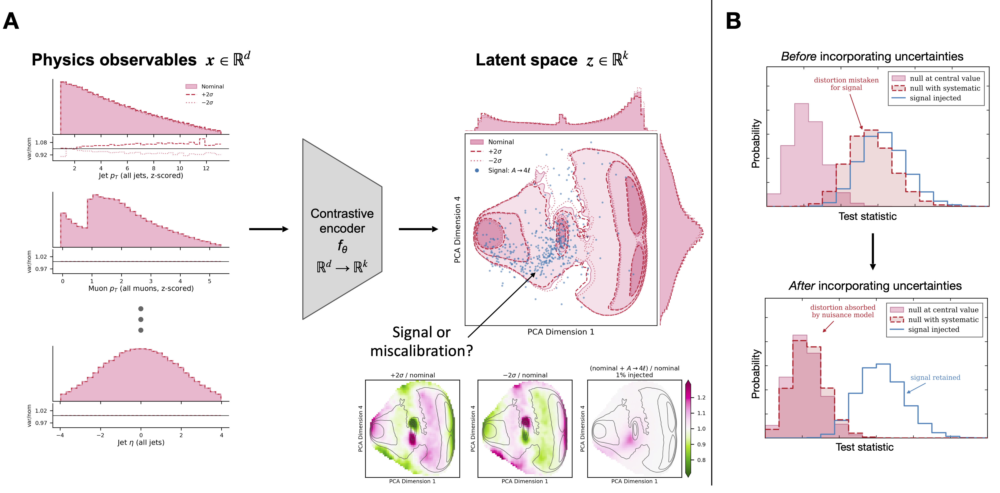
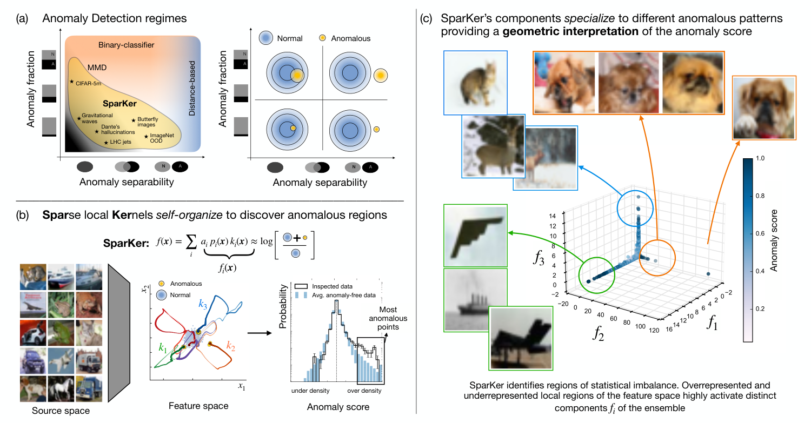
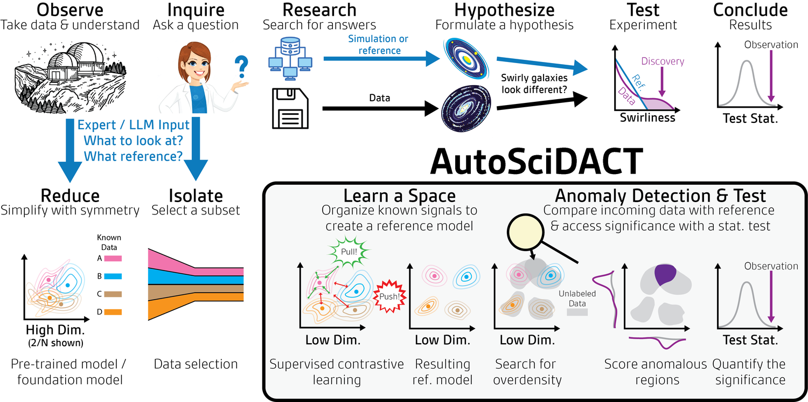
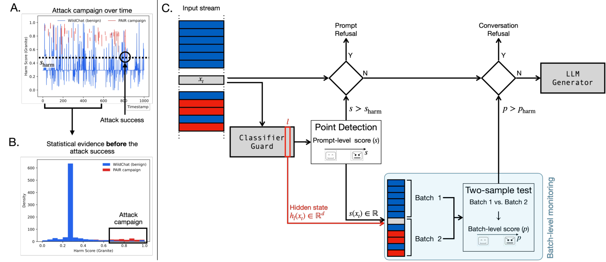

VERaiPHY — Validation & Evaluation for Robust AI in PHYsics
Gaia Grosso
Postdoctoral Fellow
NSF AI Institute for Artificial Intelligence and
Fundamental Interactions (IAIFI)
MIT · Harvard SEAS
Learning begins where expectation fails. I build statistical and machine learning methods for detecting deviations from expectation — at a scale and complexity where classical tests break down, and with the rigor and interpretability that make a detection worth acting on. I work on this for scientific discovery, and for understanding the behaviour of large AI models.

Research
An anomaly is not always visible one observation at a time. A loaded die looks fair on any single throw and gives itself away only in the frequencies of many — and the same holds for fraud inside a plausible transaction history, or for new fundamental interactions distorting the distributions of particle collisions. Asking does what we observe match what our model of the world predicts? is a statistical problem, and one that classical tests answer rigorously but lose power on when anomalies are rare or buried among uninformative features. My research looks for methods that scale to the complexity of contemporary scientific data while still returning calibrated p-values and an account of where and why the data departs from expectation.
Robust anomaly tests under systematic uncertainty
Systematic uncertainties built into the detection model rather than corrected for afterwards; anomaly scores decomposed into known and novel sources; ensembles of specialized experts whose diversity buys robustness to anomalies no one anticipated. Every architectural choice determines what a test can and cannot see, and I work to make that dependence explicit and controllable.

Physics-inspired architectures and interpretability
A detection that cannot say anything about the anomaly it flagged does little for scientific progress. I design models whose interpretability comes from their architecture rather than from a post-hoc explanation: in SparKer, locality, sparsity, and competitive self-organization act as inductive biases, so individual components specialize on distinct anomalous patterns and the anomaly score acquires a geometric reading that can be traced back to the data. Physical principles — energy-based modelling above all — are where these design choices come from.
→
SparKer

Detection at scale, from raw data to p-values
End-to-end strategies that pair domain-informed representation learning with interpretable likelihood-ratio tests, carrying point clouds, time series, images, or text from raw input all the way to rigorous p-values, without handcrafted summary statistics standing in between. I apply this to searches for new phenomena at the LHC, working toward statistical analysis performed directly on low-level detector information, including in real time during data acquisition.

Validating generative models
Generative surrogates are increasingly used in place of full physics simulations, which only helps if we know where they are wrong. I work on goodness-of-fit tests that decide whether a generative model is faithful enough to stand in for the real thing, and that diagnose the regions where it underperforms rather than returning a single pass/fail number — with the epistemic uncertainty of the generator propagated into the test itself.
Diagnostics for large AI models
Large models hide generation rules as intricate as any physical system, and their behaviour drifts with context. I am interested in turning the same detection methodology into diagnostic instruments for them: monitoring how internal structure varies under changing conditions, and identifying failure modes, hallucination, and unsafe dynamics through tests that localize what changed.

VERAIPHY — Validation & Evaluation for Robust AI in Physics
I co-organize VERAIPHY, an initiative endorsed by the PHYSTAT community that is producing a series of articles on statistical standards for developing, evaluating, and deploying machine learning in fundamental physics. Each article takes one methodological domain and asks what has to hold statistically for results obtained with it to support a discovery claim — which questions to ask, which tests to run, and how to read the answers.
My own contribution to the series is the review Are we ready for AI-driven discovery? AI verification before the next fundamental physics breakthrough, which sets out when verification is essential within the statistical discovery workflow, and where machine learning’s intrinsic limits — unavoidable inductive bias, sample complexity, experimental constraints — bound what can be claimed.
Background
I studied physics at the University of Padova, where I completed my bachelor’s, master’s, and PhD. My interest in anomaly detection started early: my undergraduate thesis applied deep learning to LHC collision data, and by my master’s I was building neural-network hypothesis tests for model-agnostic searches — work that grew into the New Physics Learning Machine.
I spent my doctorate at CERN as a CERN doctoral student, supervised by Marco Zanetti and Andrea Wulzer in Padova and working with Maurizio Pierini’s group at CERN. There I focused on making signal-agnostic searches trustworthy in practice: embedding systematic uncertainties directly into the detection model so that the resulting p-values can be believed, and deploying the method on real CMS data and on drift-tube data quality monitoring.
Since 2023 I have been a postdoctoral fellow at IAIFI, working with Prof. Philip Harris at MIT on statistical tools for discovery at collider and gravitational-wave experiments, and with Prof. Demba Ba at Harvard SEAS on physics-inspired interpretable models for anomaly detection, data validation, and the safety of generative AI. I remain a member of the CMS collaboration, convene the CMS ML Innovation group, and serve as a track convener for CHEP 2026.
Selected publications
Are we ready for AI-driven discovery? AI verification before the next fundamental physics breakthrough
Covariant contrastive learning for uncertainty-aware anomaly detection
Sparse, self-organizing ensembles of local kernels discover rare statistical anomalies
Learning to validate generative models: a goodness-of-fit approach
AutoSciDACT: Automated Scientific Discovery through Contrastive Embedding and Hypothesis Testing
Anomaly-preserving contrastive neural embeddings for end-to-end model-independent searches at the LHC
Robust resonant anomaly detection with NPLM
Multiple testing for signal-agnostic searches for new physics with machine learning
Anomaly-aware summary statistic from data batches
Goodness of fit by Neyman–Pearson testing
Fast kernel methods for data quality monitoring as a goodness-of-fit test
Learning new physics efficiently with nonparametric methods
Learning new physics from an imperfect machine
Learning multivariate new physics
Full record on ORCID and Google Scholar. See also the white paper A Virtuous Cycle: Generative AI and Discovery in the Physical Sciences (MIT Exploration of Generative AI, 2024).
Teaching & materials
Lecture notes, slides, and hands-on exercises from schools and courses. Everything with a notebook link is self-contained and free to reuse.
Same or Different? Classical and ML methods for two-sample testing in science
Guest lecture · AI Methods for Science (CDS DS 595), Boston University · March 2026
Statistical and ML tools for anomaly detection in fundamental physics
Lecture · First PHYSTAT School of Statistics, “Statistics in the era of Machine Learning”, Nikhef · November 2025
Physics-guided optimizations: inform and inspire AI models with physics principles
Lecture · IAIFI Summer School, Harvard University · August 2025
Statistical tests for anomaly detection and scientific discovery
Guest lecture · MIT 8.16/8.316 Data Science in Physics · April 2025
Diffusion models for physics — hands-on exercises
Facilitator · IAIFI Summer School, MIT · August 2024
Selected talks
Adaptive and interpretable two-sample test as a batch-level tool for AI safety
Poster · Mechanistic Interpretability Workshop, ICML · Seoul, July 2026
Detecting statistical anomalies with sparse, self-organizing ensembles of local kernels
Invited speaker · Statistical Physics for Ambitious Interpretability · Cambridge, MA, April 2026
From high dimensions to statistical discovery: anomaly detection at scale in the era of latent spaces
Invited talk · STAMPS–NSBI Workshop, Carnegie Mellon University · October 2025
Anomaly detection in the era of latent spaces
Talk · Building Big or Building Smart (MIAPbP), TU Munich · September 2025
Statistical tests for anomaly detection at the LHC
Invited talk · PHYSTAT — “Statistics meets ML”, Imperial College London · September 2024
How good is the Standard Model? Hunting anomalies in the LHC data and beyond
Public talk · Institute of Advanced Study, University of Geneva · September 2023
Full list of talks and posters in my CV.
Software
NPLM — New Physics Learning Machine
A machine-learning implementation of the likelihood-ratio test for signal-agnostic anomaly detection: returns a calibrated p-value without specifying the signal in advance, and reconstructs the most discrepant regions of phase space.
SparKer
Sparse, self-organizing ensembles of local kernels for detecting rare anomalies in learned representations. Sparsity, locality, and competition produce geometrically interpretable detection experts with formal learning-dynamics guarantees.
Generative model validation
Goodness-of-fit tooling for generative surrogates: tests that both detect deviations and diagnose the regions where a generative model underperforms, with epistemic uncertainty propagated into the test.
Code and teaching notebooks at github.com/GaiaGrosso.
Contact
I am glad to hear from students and researchers interested in anomaly detection — whether the data comes from a collider, a telescope, or a language model.